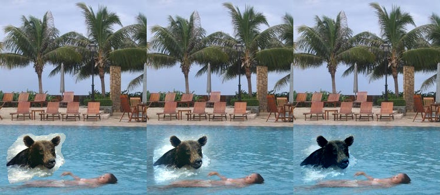
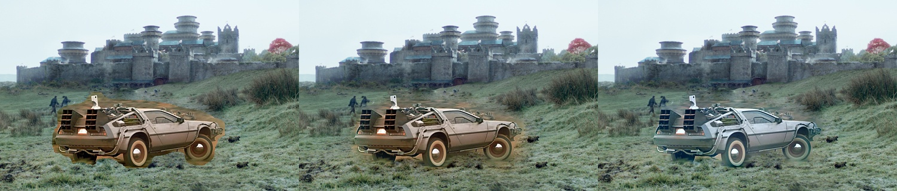
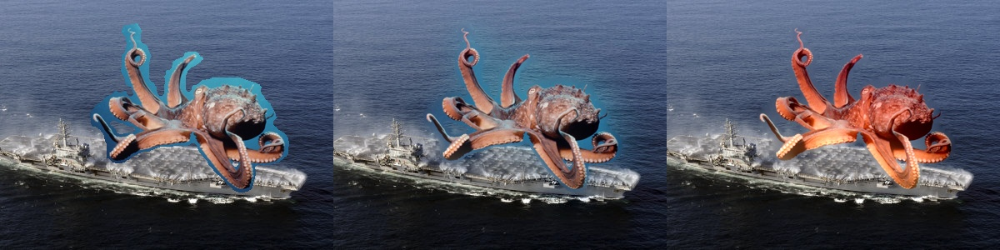

Pasting a source region over a target with a hard mask leaves obvious seams when lighting or color do not match. Poisson blending (Pérez et al.) reframes compositing in the gradient domain: the goal is an image whose gradients inside the mask follow the source (or a guided variant) while pixels on the boundary agree with the target. That coupling leads to a large, sparse linear system—discretizing the Laplacian yields the familiar Poisson equation.
The same toolkit often sits alongside Laplacian pyramid blending: pyramids mix frequency bands for smooth transitions, while Poisson editing enforces local gradient consistency for difficult illumination mismatches.
Simple alpha blend, Laplacian pyramid blend, and Poisson blend results (left to right)


